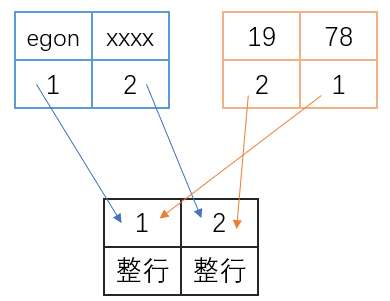

回忆杀
站在并发编程的角度 锁分为两大类 互斥锁: 同一时间只能由一个人用;信号量: 同一时间多人在用
什么是锁机制？¶
举个栗子: 同一个办公室的同事们, 都想使用打印机打印文件. 如果不加以控制. 可能出现两个人同时打印不同的内容在一个文件里, 就会引起内容混乱.
事务的锁机制: 当有并发的的多个事务同时操作同一份数据时,只有"抢到"了锁的事务,才能真正的去操作数据,使得数据的安全性得到保证。
锁保证并发的多个事务同一时间只有一个能运行, 会一定程度上降低程序的运行效率. 但能大大提升数据的安全性.
数据库锁的分类¶
1> 按锁 粒度 划分: 可分为行级锁、表级锁、页级锁 -- 粒度依次增大
锁的级别依次递增, 级别越高 并发效率越低, (主要关注行级锁,后面两基本不用)
2> 按锁 级别 划分: 可分为 共享锁、排他锁
共享侧重于只让读不让写,排他能改也能写 3> 按锁 使用方式 划分: 可分为 乐观锁、悲观锁
4> 按锁 加锁方式 划分: 可分为 自动锁 、显式锁
5> 按锁 操作 划分: 可分为DML锁、DDL锁
行级锁¶
故名思意, 表示只针对当前操作的行(eg: 4 5 6行)进行加锁, InnoDB引擎支持.
行级锁加锁粒度最小,但加锁的开销也最大.
行级锁分为 互斥锁(排他锁) 和 共享锁 两种.
要知道一点: 在软件开发过程中,我们通常会将库、表结构建好. 往后都是针对表记录的操作.
操作无非四种, insert delete update select 写 - 增删改; 读 - 查
互斥锁(排他锁) ¶
排他锁简称X锁 一旦某一数据获得排他锁后,其它事务都不能对此数据再加锁,什么锁(x锁、s锁)都不行！
一旦事务A对数据P加了排他锁:
那么其它事务无法对数据P加任何锁;
只有拿到锁的事务A可以操作数据P,而且可以读也可以写 事务A对数据P加什么锁(x锁、s锁)都行..对于写操作 insert、update、delete语句, InnoDB会自动给涉及的数据加锁, 而且是排他锁
简单来说,写操作有锁才能成功执行 事务A已经给了这行数据排他锁了 其他事务对这行数据给不了锁了啊 对于读操作 select语句, 默认不会受任何锁的影响,InnoDB不会对其加任何锁, 需要我们手动自己加
SELECT ... LOCK IN SHARE MODE;
SELECT ... FOR UPDATE;
/*
select * from employee;
+----+---------+-----+
| id | name | age |
+----+---------+-----+
| 1 | egon | 18 |
| 2 | alex | 18 |
| 3 | wupeiqi | 20 |
+----+---------+-----+
*/
语句1: select * from employee;
语句2: update employee set name='EGON' where id = 1;
语句3: update employee set name='xxx' where id = 1;
语句4: update employee set name='666' where id = 1;
语句5: update employee set name='777' where id = 1;
语句6: select * from employee where id = 3 for update;
语句7: select * from employee;
语句8: select * from employee where id > 1 for update;
语句9: update employee set name='abc' where id = 3;
语句10: update employee set name='abc' where id = 4;
终端A直接执行语句2,修改成功.紧接着终端B执行语句3,也修改成功.
解释: A终端,隐式开启了事务,为update语句加了互斥锁,id为1的这一行数据被锁住了,其它终端会话都不能对这一行数据进行写操作,待隐式commit提交事务后,互斥锁释放..因为A终端对id为1的行加的锁释放了,B终端执行语句3就不会阻塞.不费吹灰之力就抢到了这把锁.
终端A和B同时都Begin开启了一个事务.A执行语句4成功,B运行select语句是能成功的,select语句不受锁的影响,但B终端执行语句5,会阻塞在原地..当A终端rollback或commit释放锁后.B终端的语句5立刻执行成功.
(补充: A可以连续执行成功语句4和语句5 因为排它锁一直在事务A操作的id=1的那行身上啊！)
终端A和B同时都Begin开启了一个事务.A执行语句6,查出了结果并且把id=3的这行加互斥锁给锁住了.B执行语句7是能成功查处结果的,因为单纯的select语句不受锁的影响.B接着执行语句8(分析:给id>1的行加排它锁,包含id=3的那行),敲下回车会发现直接阻塞在原地..B终端ctrl+c强行退出后执行语句9(分析:update 语句对id=3加排它锁),敲下回车,依旧会阻塞在原地.why?因为A终端没有对id=3的行的锁进行释放！！但若B执行语句10是能成功的！！why？看下方的解析。
【注意: id字段是主键是索引！！ innodb锁的其实是索引！即只有加了索引的字段才是行级锁..命中了索引就锁行,若此字段不是索引,它会将表中的所有行都锁住,相当于表级锁..(实际上是行级锁哦 只是相当于)】
先将表employee的主键id字段给删除.
alter table employee modify id int; alter table employee drop primary key;
终端A和B同时都Begin开启了一个事务.A执行语句6,B执行语句9,语句10都会阻塞在原地...
#### 共享锁(读锁)
共享锁 简称S锁
若事务A对数据P加上共享锁后, 其他事务只能对数据P再加共享锁或不加锁
一旦多个事务都对数据P加了共享锁,大家都只能读不能改..
事务A对id=1的这一行加了共享锁,事务B也对id=1的这一行加了共享锁.
事务A能否执行对id=1这一行的update操作？
不可以,因为update语句默认会加排它锁,但是加不上！因为事务B对这行数据加了共享锁,事务A只能对其加共享锁或不加锁.
站在事务B的角度同理.事务B也不能对这一行数据进行update操作.
特例: 若事务A对id=1的这一行加了共享锁,没有其他事务对这一行数据加共享锁了.
这样的话,没人跟事务A抢锁,事务A可以对一行数据进行update操作,再给这行数据加一个互斥锁.
---
/* 死锁问题 */
语句1: select * from employee where id = 1 lock in share mode;
语句2: update employee set name='xxx' where id = 1;
终端A和B同时都Begin开启了一个事务. 事务A执行语句1,事务2也执行语句1;接着,事务B执行语句2,阻塞,因为站在事务B的角度事务A对id=1这一行加了共享锁,那么事务B也就只能对这一行加共享锁或不加锁,语句2的update的排它锁加不上导致了阻塞.. 此时,事务A也执行了语句2,终端A直接命令行报错"ERROR 1213 (40001): Deadlock found when trying to get lock; try restarting transaction"触发了死锁现象,事务A被强制终止,释放了所有锁. 事务B的语句2立刻运行成功..
Innodb的锁机制¶
InnoDB(索引组织表)支持行级锁和表级锁,默认为行级锁.
InnoDB行级锁的三大特点¶
锁的是索引 只有在命中索引的情况下,才会锁住符合条件的一行或几行.没命中的话,锁全部行,相当于锁表.
具体来说,innodb存储引擎的索引分为主键索引和辅助索引
命中的是主键索引,锁的就是主键索引对应的记录;
命中的是辅助索引,会先锁住该辅助索引的记录,再锁住相关的主键索引的记录... 如果没有索引,Innodb会通过隐藏的聚簇索引来对记录加锁..实际效果跟表级锁一样..
MYISAM支持表锁,不支持行锁;InnoDB引擎支持行锁和表锁.
即在MYISAM下如果要加锁,无论怎么加都会是表锁.
在InnoDB引擎支持下如果是基于索引查询的数据则是行级锁,否则就是表锁.
So,一般情况下我们会选择使用innodb引擎,并且在 搜索 时也会使用索引(命中索引).
在innodb引擎中,update、insert、delete的行为会自动加锁.内部都会先申请锁(排它锁),申请到之后才执行相关操作,最后再释放锁.
所以,当多个人同时向数据库执行:insert、update、delete等操作时,内部加锁后会排队逐一执行.
而select则默认不会申请锁.若你想要让select去申请锁,则需要配合 事务 + 特殊语法来实现.
举个例子: `for update`,排它锁,加锁之后,其他不可以读写.
begin; -- 开启事务
select * from L1 where name="武沛齐" for update; -- name列不是索引（表锁）
commit; -- 结束事务,事务结束后释放锁!
begin; -- 或者 start transaction;
select * from L1 where id=1 for update; -- id列是索引（行锁）
commit;
行级锁三种算法¶
三种算法都以以命中索引为前提！！
innodb引擎的行级锁算法默认是Next-Key Lock
Record Lock (单个记录加锁) : 只对符合条件的行加锁!
Gap Lock (间隙锁) : 锁定一个范围,但不包括记录本身
何为间隙？eg 年龄18 20 25, 18到20之间就是间隙;20到25之间也是间隙!
间隙锁可以解决读现象里的幻读.
Next-Key Lock = Record Lock + Gap Lock
比如where ege=20,他就会把20对应的这行记录以及20的上下两个间隙(18-20,20-25)都锁住！
死锁问题¶
简单情况¶
事务A:
begin;
select * from employee where id = 1 lock in share mode; -- step1加锁失败 事务B已经对id=3的行加锁了¶
update employee set name='xxx' where id = 3; -- step3 阻塞在原地
事务B:
begin;灵魂三问: 加的什么锁?对什么加的锁?在加锁的时候,有无其他事务对其加锁?¶
加排他锁;id=3的行加锁;没有 加成功了！¶
delete from employee where id = 3; -- step2
对id=1的行加排他锁;加锁失败! 因为事务A对id=1的行加了共享锁¶
delete from employee where id = 1; -- step4 阻塞在原地
并发隐藏情况¶
高并发的时候,有几率出现这样的问题.. （innodb锁机制的三大特点导致的）
-- 表emp 表对id字段加了主键索引;name字段和age字段都加了辅助索引..
+----+---------+-----+-----+
| id | name | age | sex |
+----+---------+-----+-----+
| 1 | egon | 78 | male|
| 2 | xxxx | 19 | male|
+----+---------+-----+-----+
语句1: select * from emp where name = 'egon' or name = 'xxxx' for update;
语句2: update emp set sex='famale' where age = 19 or age = 78;
-- 语句1和语句2都命中的辅助索引,会先对辅助索引加锁,再对主键索引加锁
-- eg: 语句1锁的先后 (egon,1) (xxxx,2)(1,整行)(2,整行)
讲道理
若事务A执行语句1,会对名字为'egon'和'xxxx'的行加了互斥锁.对主键索引加锁顺序是<1,2>
若事务B执行语句2,会对年龄为19和78的行加互斥锁.对主键索引加锁的顺序是<2,1>
事务A和事务B并发同时运行,事务A上来先把主键1给锁住,事务B上来先把主键2锁住,接下来就BBQ了...
事务A对事务B说你把主键2给我释放出来,我要加锁 尬住了..
事务B对事务A说你把主键1给我释放出来,我要加锁 尬住了..

事务隔离机制¶
事务具有原子性、一致性、隔离性、持久性四大特性.. 而隔离性顾名思义指的就是事务彼此之间间隔离开,多个事务在同时处理一个数据时彼此之间互相不影响.若隔离不够好,就会出现读现象..
事务的隔离级别越高, 并发能力也就越低
| Y：可能出现 N：不会出现 | 脏读 | 不可重复读 | 幻读 |
|---|---|---|---|
| Read uncommitted 未提交读 | Y | Y | Y |
| Read committed 提交读 | N | Y | Y |
| Repeatable reads 可重复读 | N | N | Y |
| Serializable 可序列化 | N | N | N |
READ UNCOMMITTED：可以读取事务中还未提交的被更改的数据.
READ COMMITTED：只能读取事务中已经提交的被更改的数据.
REPEATABLE READ：表示一个事务中, 对一个数据读取的值, 永远跟第一次读取的值一致, 不受其他事务中数据操作的影响。这也是 MySQL 的默认选项.
SERIALIZABLE：表示任何一个事务, 一旦对某一个数据进行了任何操作, 那么, 一直到这个事务结束, MySQL 都会把这个数据锁住, 禁止其他事务对这个数据进行任何操作.
题外话: Django框架里推荐使用RC(提交读)机制,框架会帮忙解决不可重复读和幻读问题...
mysql默认的是Repeatable reads机制,这一机制没有解决幻读问题! 但是用Innodb引擎的话,它的Next-Key Lock 行级锁算法解决啦！
乐观锁和悲观锁¶
乐观锁和悲观锁更像是一种编程思想.. 是锁具体的一种应用方式
悲观锁¶
每次写数据都认为一定会有人跟它同时写这份数据.. 不管三七二十一,有没有人跟我抢,一上来就加锁!
安全性高,效率低,并发低,会导致大量的人等待.. (几乎不用..效率太低了)
乐观锁¶
每次写数据都认为没人跟它同时写这份数据..
没有加锁,不影响并发效率;大量人同时修改,就会有大量的提交失败..无效提交..
它没有用数据库自带的锁机,那如何实现呢？
方式一:
在数据库里加一个版本号的字段,每次写后看版本号跟写之前一不一样.不一样写失败, 若一样, 那写完后版本号加1.
方式二:
在数据库里加一个时间戳的字段,写操作后看时间戳有无被更改,被更改了这次写操作就失败了.
MVCC¶
Mysql Inodb存储引擎实现的事基于多版本的并发控制协议 — MVCC.
MVCC最大的好处在于：读不加锁, 读写不冲突.. 这机制有效的解决了数据的脏读问题!MVCC中, 读操作可分为两类: 当前读和快照读..
快照读¶
每开一个事务,默认读的是快照; 简单的select操作, 属于快照读,不加锁.
当前读¶
特殊的读操作, 插入/更新/删除操作, 属于当前读, 需要加锁..
加了共享锁只能读内容,不能改,所以读的内容一定是当前内容
互斥锁也是, 因为互斥嘛读的也是最新的内容
基于python代码的示例
import pymysql
import threading
def task():
conn = pymysql.connect(
host='127.0.0.1',
port=3306,
user='root',
passwd='root123',
charset="utf8",
db='userdb'
)
cursor = conn.cursor(pymysql.cursors.DictCursor)
# cursor = conn.cursor()
# 开启事务
conn.begin()
cursor.execute("select id,age from tran where id=2 for update")
# fetchall ({"id":1,"age":10},{"id":2,"age":10}, ) ((1,10),(2,10))
# {"id":1,"age":10} (1,10)
result = cursor.fetchone()
current_age = result['age']
if current_age > 0:
cursor.execute("update tran set age=age-1 where id=2")
else:
print("已售罄")
conn.commit()
cursor.close()
conn.close()
def run():
for i in range(5):
t = threading.Thread(target=task)
t.start()
if __name__ == '__main__':
run()